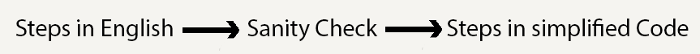
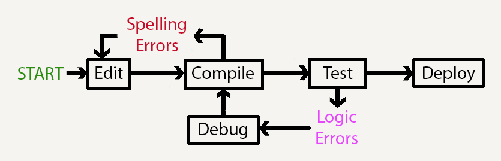
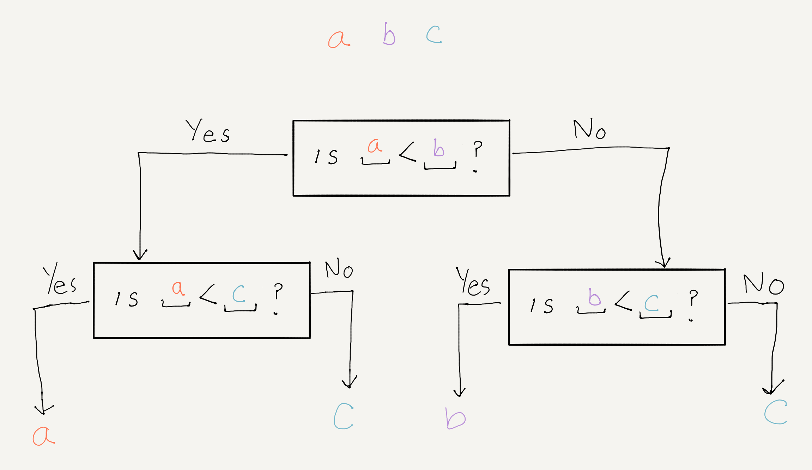
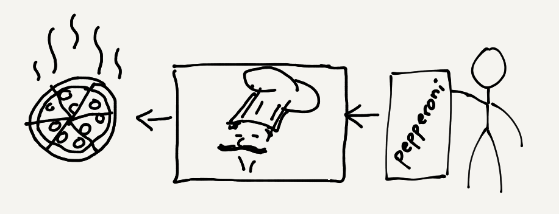
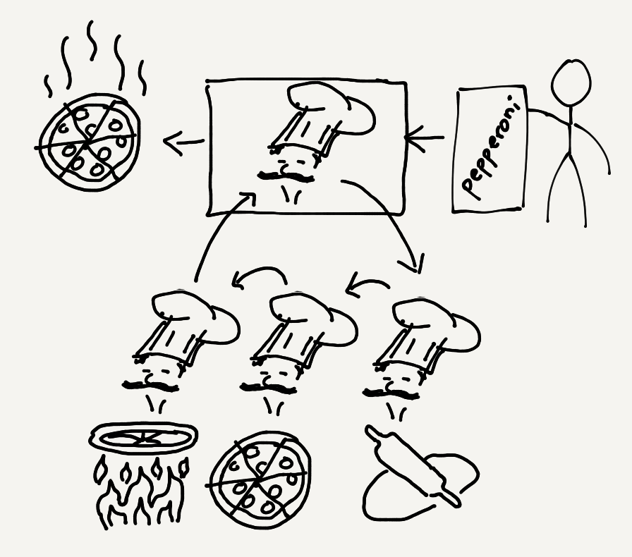

CS 1111
Introduction to Software Development
GWU Computer Science
Introduction to Software Development
GWU Computer Science
If you do not have your Codio course ready, use any text editor or simple IDE. Some possibilities are:
If it sounds like a Sci-Fi novel, you are not wrong. This is concept allowed humanity to learn more and organize their thoughts.
The essence of abstractions is preserving information that is relevant in a given context, and forgetting information that is irrelevant in that context.
Computer Science is the science of abstraction.
Abstraction is what allow us to have conversations without specifying absurd levels of detail. Think about how you order a Pizza:
Example 1: Think about how you order a Pizza:
This is a very high-level of abstraction in which the context is clear to both parties and you both already know what every key word means. It is high-level because the details are not needed, only the context.
Example 2: If you were teaching an alien (that has never even heard of what a pizza is) to make a pepperonni pizza from scratch, you can't simply say "make me a pepperonni pizza". You'd have to go into great detail about it. Asuming the alien speaks english and all the ingredients are there and they are labeled and identifiable:
This is a very low-level of abstraction in which the context is not used (much) and great detail is needed to make progress.
In this class, we will use abstraction to analize a problem and design a solution for it.
Analysis: We will break the problem into parts and identify the high-level steps to follow in order to complete each task. After we understand the problem, we must design a solution.
Design: We will follow a careful approach to solving problems:
Steps 1-3 we call "Planning".

Steps 4-7 we call the ECT process (Edit, Compile, Test):

Algorithm: The High-Level steps to solve a problem. This corresponds to the Planning part above.
Program: The algorithm implemented as a set of steps written with correct syntax, and using a set of existing programming features. This corresponds to the ECT part above.
This part is mostly creativity, insight, and experience. This is where puzzle solving skills and mathematics, and imagination let you come up with solutions.
If you are given any 3 objects (a, b, and c), how can you find the one with the minimum weight?
What is the point?:
For some problems, it is enough to discuss them in english to solve them and do a sanity check. In this case, sanity checks would mean verifying that your method works for other instances of the same problem.
For example, if the weights are represented by numbers, then:
What about the Simplified Code?:
Once you have a proposed solution in english, you can either simplify the language to its minimum representation ot draw a sketch.
Here is a simple sketch of an incorrect possible solution for the minimum number problem:

Why is it wrong!
Having a sketch allows you to see your english solution in a compressed form and it might reveal some problems!
Pseudo-Code: We'll show you a way of writing this in simplified code form.
Sanity Checks: You can try the above options with either method to verify it works.
We can also Compile using the Terminal.
Very soon we will be doing more complex things than printing "Hello, World!". At that point, we will work on one of the most important skills in programming (and logic): Debugging.
The point of planning is to find the general structure of the solution, in terms of a series of steps from operation-to-operatoin or module-to-module.
If you get here, you are taking for granted that each module simply does its job. That is treating a module as a black box.
Using a module as a black box is like saying: "I don't care how it works, I only need to know what I need to give it and what it gives me in return."
We'll make a rough analogy with ordering a pizza:

At the high-level, we only need the inputs (pizza order and money) and outputs (actual pizza and receipt).
We're using the pizzeria as a black box. We don't need to know about or participate in what the actual work is:

We will look into this next class. Just so you have these terms in mind for next class:
Syntax: The set of rules that define well formed sentences in a given language. In other words: Is the spelling correct, given the language (Java)?.
Example: the sentence "He!lp the d,og ate the pizza" has incorrect syntax (even if, as a human, you might be able to pick up on the meaning.
Semantics: This looks at the meaning of the sentences rather than at how they are written. In other words, Does the code actually do what we want it to do?.
Example: the sentence "Help, the pizza ate the dog!" has correct syntax but it does not reflect what the interlocutor attempted to say:
We have placed you all in groups of 3 or 4. In order to give you an oportunity to get to know each other a bit more, and to also get some bonus points, we've deviced an activity.
The idea is this: